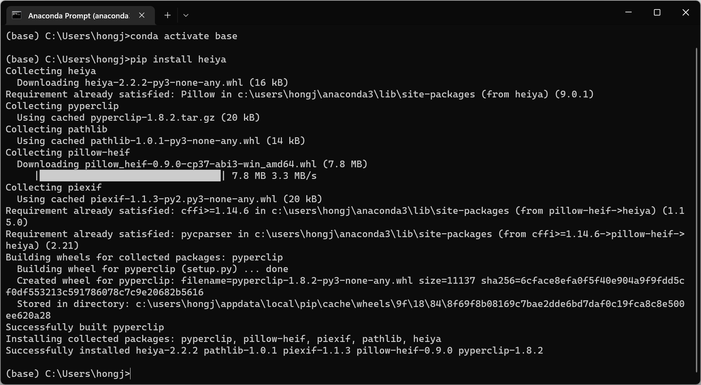
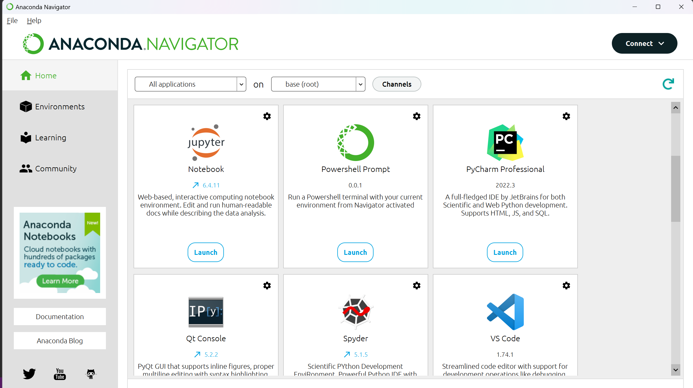
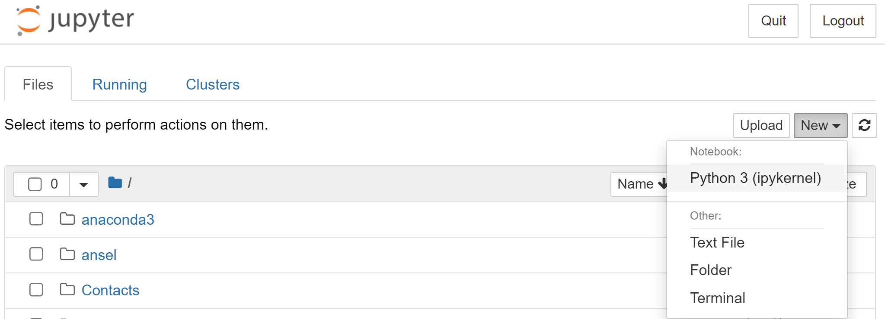
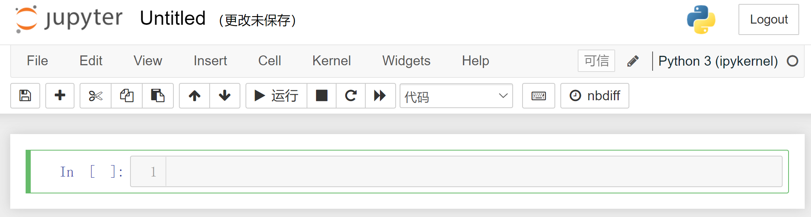
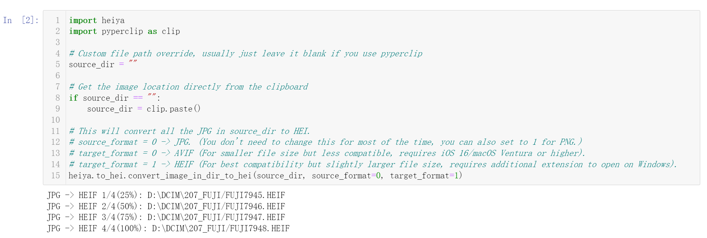

Chapter 1: Prerequisites
Long story short, Heiya runs on Python 3, so at a bare minimum you must have Python installed on your computer. But there are also some optional things to make your life easier.
1.1 - (Optional but strongly recommended) Install Anaconda
Note: If you already have python, jupyter_notebook, and pyperclip installed on your computer, feel free to skip this section.
In order to use it more easily, you might want to optionally install jupyter_notebook.
Configuring python and jupyter_notebook might be a daunting task for those who are not familiar with using Python.
Therefore, it would be much better if there is something that just takes care of everything automatically and not having to mess around with the code.
That is what Anaconda does.
Note I have no affiliation with Anaconda, it just makes setup and install python prerequisites much easier. After you have Anaconda installed on your computer, it should already configured pip, jupyter_notebook, and python for you, and if you don't know what I am talking about, don't worry about it and just restart your computer.
Of course, if you are familiar with python configuration, you can do it on your own, Anaconda is optional.
1.2 - Install Heiya (Mandatory)
Installation of Heiya should be fairly straight forward if you did the previous section or already have everything setup.
Note: If you used Anaconda, run the following in Anaconda Prompt (Help in 1.2.2):
conda activate base
pip install heiya
Once finished, it should look something like below.
If you configured on your own, simply run the following command in Terminal with administrator privileges (Help in 1.2.1).
pip install heiya
1.2.1 - Troubleshooting
If you encounter some error code, most likely one of two things is going wrong:
curl https://bootstrap.pypa.io/get-pip.py -o get-pip.py
python get-pip.py
ERROR: Could not install packages due to an OSError: [WinError 5] Access is denied: 'c:\\python310\\scripts\\pip.exe'
1.2.2 - How to run Terminal with administrator priviledges?
macOS
On macOS, it is pretty straight forward. Open Launchpad and search for "Terminal", and open that app.
Type in the above command, and press enter. Terminal will prompt you to enter the password of your computer, just do it and it is complete.
Windows
On Windows 11, there are many ways to run Terminal (Or Powershell/Command Prompt if you are on Windows 10 or below, it is the same thing).
Simply right click the Windows icon on the bottom left of your screen, and press the option to Run Terminal (or Powershell) as Admin.
1.2.2 - How to open Anaconda Prompt?
Open Anaconda Navigator, look for something that says "Anaconda Prompt/Powershell Prompt/CMD.exe Prompt". Basically, anything with the name "Prompt" will probably do.
Press "Launch".
Chapter 2: Get Started
For the most common usage, assuming you are a photographer that has some JPGs (either you shoot JPG or export from Lightroom as JPG), and you want to convert them to HEIF or AVIF so you can import them into your iCloud/Google Photos so these photos take very little storage. Here's how to quickly get yourself started.
Note: This looks long because is a babysit tutorial that covers in great detail. Once you get it, it is brainless to run.
2.1 - Open Jupyter Notebook
First, open Anaconda Navigator App on your computer (Assuming you already have it installed), and open "Jupyter Notebook" inside the app. If you did not do the optional stuff, I assume you know what you are doing and just open a Jupyter Notebook page.
A webpage should open. Navigate to a place where you want to save this tool, and click "New - Notebook Python 3" on the top right of the Jupyter Notebook web page.
A new webpage that looks something like this should appear. First click "Untitled" to name it to something you like, for example, "jpg_hei". In the below right after "In [ ]: 1" is the place where you can enter some code.
2.2 - Make the Tool
Copy all the code and paste them into your newly created notebook. This code is also available on Github in jpg_hei.ipynb (Link).
"""
JPG to HEIF/AVIF
Convert JPG shoot by camera to High Efficiency Images with metadata to import to iCloud photo library.
import heiya
import pyperclip as clip
# Custom file path override, usually just leave it blank if you use pyperclip
source_dir = ""
# Get the image location directly from the clipboard
if source_dir == "":
source_dir = clip.paste()
# This will convert all the JPG in source_dir to HEI.
# source_format = 0 -> JPG. (You don't need to change this for most of the time, you can also set to 1 for PNG.)
# target_format = 0 -> AVIF (For smaller file size but less compatible, requires iOS 16/macOS Ventura or higher).
# target_format = 1 -> HEIF (For best compatibility but slightly larger file size, requires additional extension to open on Windows).
heiya.to_hei.convert_image_in_dir_to_hei(source_dir, source_format=0, target_format=1)
Your notebook should already be saved, if not, do a quick "File - Save As" on the Notebook tool bar to make sure your notebook is created.
2.3 - Run the Code
Now, use Finder(macOS)/File Explorer(Windows) to go to the place where you store all of the JPGs you desire to convert.
2.3.1 - Copy the directory address.
Copy the directory address to your clipboard.
At this point, you might have something similar to this stored in your clipboard. This is a SD card from a Fujifilm camera, your address might vary depending on where your photos are.
D:\DCIM\207_FUJI (Windows)
/Volumes/SDXC/DCIM/207_FUJI (macOS)
Now, you can do one of two things:
source_dir.
2.3.2 - Run the code.
Make sure to select the cell by single clicking the code.
Navigate to your tool bar, and "Cells - Run Cells" to run the newly copied code.
Additionally, you can use Shift + Enter on your keyboard to make this operation faster.
Heiya should automatically start to convert the JPGs, and will print the progress down below.
Horray! Now just drag all the HEIF/AVIF files into Apple Photos/Google Photos and enjoy amazing photos that takes up very little storage!
2.4 - Conclusion
In this section, I hope I did a fair job detailing basic usage of this tool and accounted for any obstacles you might encounter using it.
From now on, all you need to do is open the tool in Jupyter notebook, copy the folder path, and run the code. Should be pretty brainless.
If you have any question, feel free to contact me by going to my contact page (Link).
Chapter 3: Advanced Usage
For now, I have limited time and effort, so any advanced usage and how to use other functions of Heiya can be found in the following notebooks.
| Name | Link |
|---|---|
| Heiya Basic Demo | https://github.com/wu-hongjun/heiya/blob/main/heiya_basic_demo.ipynb |
| Heiya Full Demo | https://github.com/wu-hongjun/heiya/blob/main/heiya_full_demo.ipynb |
Chapter 4: Heiya Functions
This chapter will be the home to document all the functions available to call independently so you can build your own pipeline.
It is work in progress, and most information you are looking for can be found in the Advanced Usage section above.
Chapter 5: To-Do
Some potential improvements that can be done include:
pillow_heif and instead rewrite the entire tool using imagemagick.
Although I shall note that if you have a camera that already shoots HEIF, you probably don't need this tool.
ffmpeg.
Chapter 6: License
Heiya is distributed in the license in LICENSE.txt.